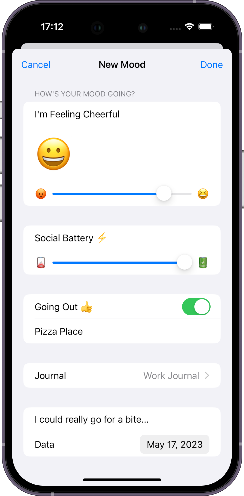
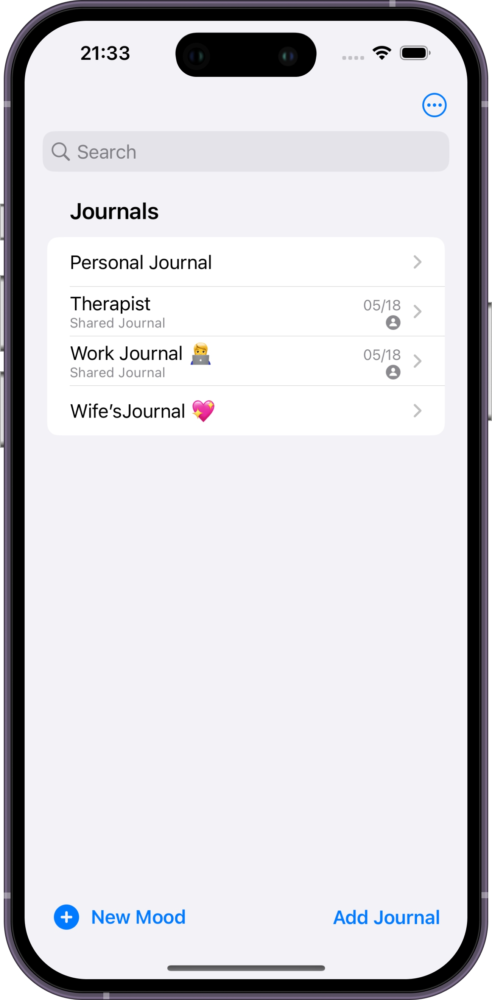

Easy Emotions Tracking
Rate your daily emotions with a unique Emoji. Add personal notes to each entry, allowing for a more detailed reflection of your emotions. Monitor your social battery and indicate your inclination to go out or not, enhancing your understanding of external influences on your mood.

Multiple Journals
Create and manage multiple Journals to focus on different aspects of your life. Whether it's your overall mood, work-related emotions, or any other area you wish to focus on, Journals provides the flexibility to adapt to your needs. Easily switch between Journals to gain insights into various aspects of your emotional well-being.
